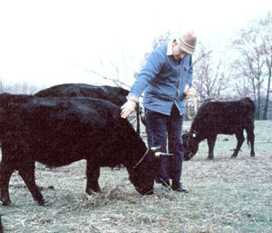

Randy Kidd reports on "miniature" cattle:
Suppose someone could "invent" the perfect cow for homesteaders . . . what would the bovine beauty be like? Well, the animal would probably be an economical, small beast that required about half the grazing land of an ordinary cow or steer . . . yet still gave a fine yield of both milk and beef, right? Not only that (as long as we're fantasizing, we might as well go all the way!), but the critter would be so docile and friendly that it could be a domestic pet as well as a livestock animal!
Well, amazingly enough, such a small-is-beautiful breed of cattle actually exists! These "dream beasts" are called Irish Dexters (they were developed-years ago-by frugal Gaelic folk who wanted to get a lot of milk and meat but owned only small plots of land), and they really and truly do possess all the "invented" virtues listed above.
So if you're a small-scale farmsteader, Dexter cattle could quite possibly be the perfect livestock for you to raise. BUT (isn't there always a "but"?) before you try to build up a herd of the pint-sized bossies, you should take a close look at both the "pluses" and "minuses" of the Emerald Isle imports.
THE GOOD NEWS
Irish Dexters are, indeed, much smaller (and therefore more "homestead sized") than our common cattle breeds. A mature cow of this unique line averages around 600-800 pounds, and an adult bull weighs in at between 800 and 1,000 pounds (which makes the beast a heck of a lot lighter animal than the average-sized 2,000-pound Brahman steer!). The waist-high ruminants are stocky and very short-legged (especially below the knees) critters. In fact, they resemble heavy-shouldered Black Angus cattle, but they're built so low to the ground that you almost wonder if their briskets will drag!
Dexter cattle are also "easy keepers": They're relatively weather-hardy beasts and require much less land and grain than do larger bovine breeds. During the grazing season, a cow and her calf can eat heartily on a couple of acres of good pasture . . . and an adult Dexter's daily wintertime ration need be only a bale-or at most a bale and a half-of hay along with a pound of grain.
Just as important as the breed's economical eating habits is the fact that the dual-purpose animals do a good job of producing both meat and milk. An 18-month-old steer will dress out to a good 250-500 pounds of tasty beef, and a cow may yield 400-600 gallons of milk a year. (The fresh liquid contains a high-5%, or more-butterfat content, but tends to be "naturally homogenized" like goat's milk, so you'll need either a separator or some patience if you want to produce cream.)
Dexters are also extremely easy to work with. The low-slung cud-chewers have such gentle dispositions that some owners let their children caretake 'em . . . others find that a few strands of barbed wire fencing are enough to contain the placid critters . . . and lots of Dexter ranchers think of their animals as bovine companions!
You'd naturally assume that such positive traits would make Dexter cattle just about the breed for small landholders. And sure enough, most everyone who raises the animals is absolutely delighted with the petite-but-productive beasts. So why, then, haven't Dexters become farmstead regulars? Why don't you see the critters all over our nation's pastures? The reason, of course, is that along with all the good news about the hardy cows, there is also some bad news.
THE OTHER SIDE OF THE STORY
The most "infamous" drawback of the Irish Dexter is the breed's genetic "bulldog trait". This birth defect (chondrodystrophia fetalis) is fatal to any fetus that inherits it. The mother is not affected, but her unborn calf-which has a bulldoglike pushed-in nose and extremely short legs-is spontaneously aborted sometime between the second and eighth months of pregnancy.
The inherited trait is carried by a recessive gene, so while only a moderate percentage of Dexter calves are "bulldogs", the potential for the defect is often handed down by seemingly healthy specimens.
In theory, one quarter of Dexter offspring bred from parents who carry the trait should not survive. Fortunately, some other-and not yet completely understood-genetic factors modify the occurrence of this calamity so that, in real life, less than one quarter of the offspring are bulldogs. (Incidentally, other cattle can be afflicted with chondrodystrophia fetalis . . . so never risk spreading the bulldog trait by mating a Dexter with an animal of another breed.)
The first piece of bad news, then, for potential Dexter caretakers is that such farmers will lose a percentage (probably around 5-10%, but conceivably closer to 25%) of their calf crop. Established Dexter owners, though, don't find this part of "doing business" with the breed to be a prohibitive drawback.
Prospective "mini-cow" raisers will have to face one more-quite serious-problem, however: scarcity. There are only 500 or 600 Irish Dexters in the entire United States, so it can be danged hard to find an animal that's up for sale. Folks sometimes have to search for years to locate an owner who's willing to part with even one healthy, productive cow.
You can learn the whereabouts of Irish Dexters in the U.S. by contacting either the American Dexter Cattle Association, 707 West Water Street, Decorah, Iowa 52101 . . . or James Johnson (the organization's president), 4092 Broadview Road, Richfield, Ohio 44286. [EDITOR'S NOTE: Be sure to send a couple of dollars along with any requests for information, to help compensate these folks for their mailing expenses and completely voluntary assistance.] But be patient while you're waiting for a reply. The Dexter Association people have-at times in the past-been deluged with information requests. They eventually (and kindly) answer all their mail . . . but they might understandably not "cotton to" insistent queries from people who are too anxious.
So if you want to raise Irish Dexters, you first have to accept the fact that it will take time-and persistence-to discover a source of the economical animals. On the other hand, though, folks who eventually do get these "dream" farmstead livestock most often find that the rewards are worth the wait.
|
 |
|
|